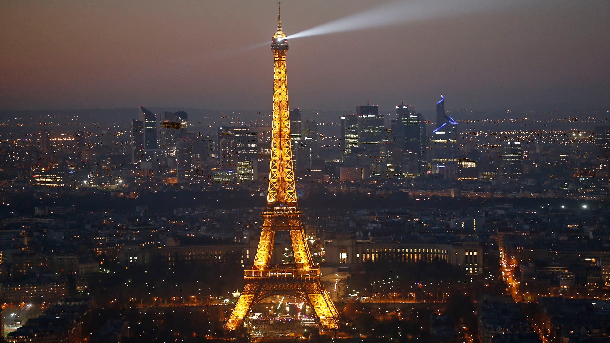
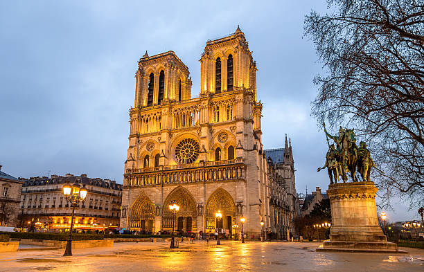
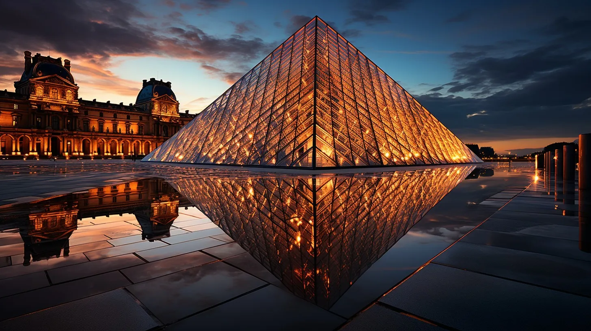
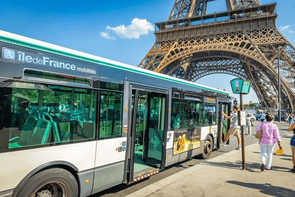
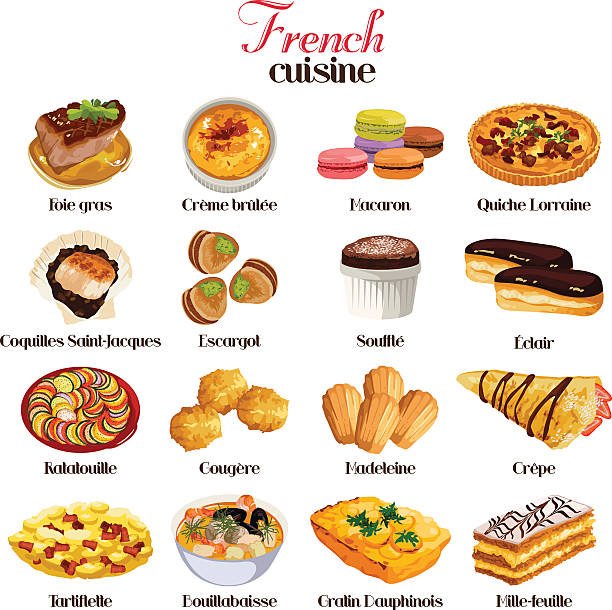
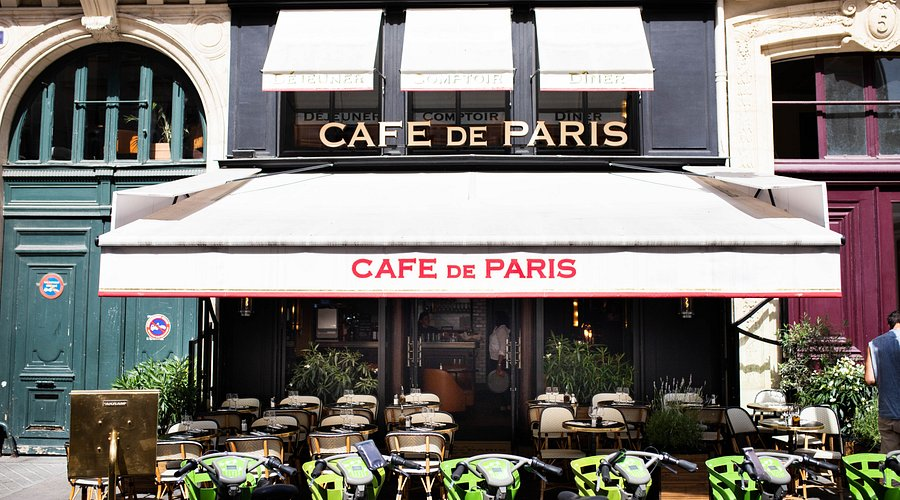

Entrada 1: Descubriendo París
París es una de las ciudades más emblemáticas del mundo, famosa por su historia, arte y cultura. En este recorrido, exploraremos algunos de los lugares más icónicos que no te puedes perder durante tu visita.
Torre Eiffel
La Torre Eiffel es el símbolo más reconocido de París. Esta impresionante estructura de hierro ofrece una vista panorámica espectacular de la ciudad desde sus plataformas. Es un lugar imprescindible para cualquier visitante de la capital francesa.

Catedral de Notre-Dame
La Catedral de Notre-Dame, ubicada en la isla de la Cité, es una de las catedrales más impresionantes de Europa. Su arquitectura gótica y su historia la convierten en un lugar único para los amantes de la historia y la cultura.

El Museo del Louvre
El Museo del Louvre es uno de los museos más grandes y famosos del mundo. Alberga una vasta colección de arte que abarca miles de años de historia, incluyendo obras maestras como la Mona Lisa de Leonardo da Vinci.

Entrada 2: Rutas y Consejos
En esta entrada, te daré algunos consejos para recorrer los lugares más emblemáticos de París.
Estos tips te ayudarán a aprovechar al máximo tu visita a la Ciudad de la Luz.
Rutas a pie por París
Una de las mejores formas de conocer París es caminando. Desde el barrio de Montmartre hasta los Campos Elíseos,
hay mucho que explorar a pie. No te olvides de pasear por el Sena para disfrutar de las vistas más pintorescas de la ciudad.
El Sistema de Transporte
El metro de París es una excelente forma de moverse por la ciudad. Asegúrate de comprar un pase de transporte que te permita
usar tanto el metro como los autobuses para viajar con facilidad.
Visitas Guiadas
Si prefieres conocer la ciudad con un guía, puedes unirte a un tour que te dará información detallada sobre la historia y
los secretos de París. Estos tours son una excelente opción para profundizar en la cultura de la ciudad.

Entrada 3: Comida Típica en París
La gastronomía parisina es mundialmente conocida. Desde los croissants hasta los exquisitos platos franceses, París es un destino
gastronómico por excelencia.
Baguette
La baguette es un pan largo y crujiente que es un clásico de la cocina francesa. A menudo se disfruta acompañado de quesos o
como un sándwich.
Croissants
Los croissants son pasteles de hojaldre suaves y mantecosos que se disfrutan en el desayuno. Son perfectos para acompañar un
café mientras exploras la ciudad.
Canelés
Este delicioso postre originario de Burdeos tiene una capa exterior caramelizada y un interior tierno. Es un must si eres
amante de los dulces franceses.

Entrada 4: La Cultura de los Cafés en París
París es famosa por su cultura del café. Los cafés parisinos son lugares icónicos para disfrutar de una bebida, conversar o
simplemente observar la vida parisina.
Cafés Clásicos
Los cafés parisinos son el corazón de la vida social en la ciudad. Disfruta de un café au lait en lugares clásicos como
Café de Flore o Les Deux Magots, donde se solían reunir escritores y artistas famosos.
Cafés de Especialidad
París también cuenta con una escena de cafés de especialidad, que ofrecen granos de café de alta calidad y una experiencia gourmet
para los amantes del café.
Cafés con Vista
Algunos cafés de París cuentan con vistas excepcionales, como los que se encuentran cerca de la Torre Eiffel o en el barrio de
Montmartre, donde puedes disfrutar de un café mientras contemplas las vistas más impresionantes de la ciudad.
